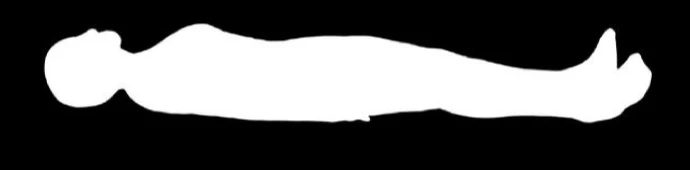
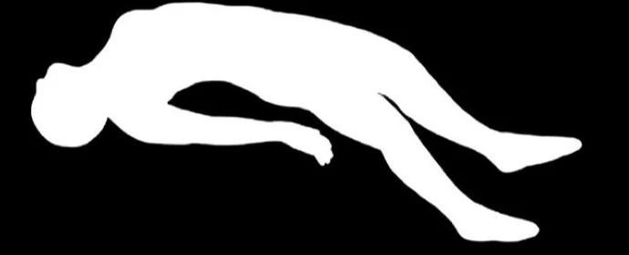
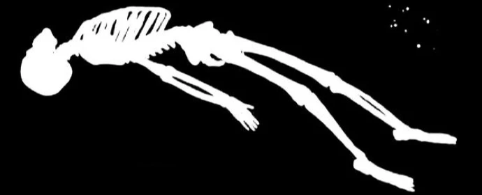
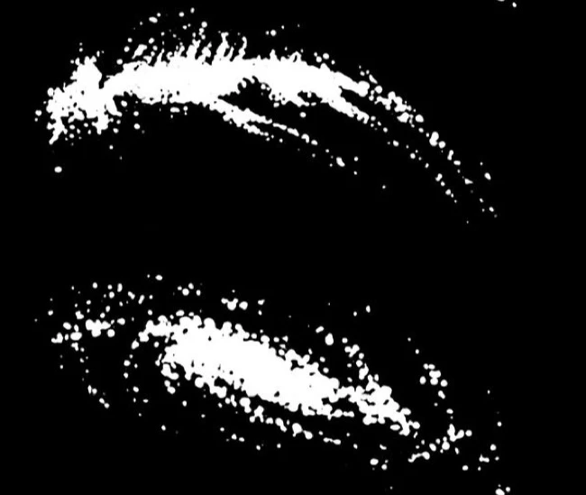
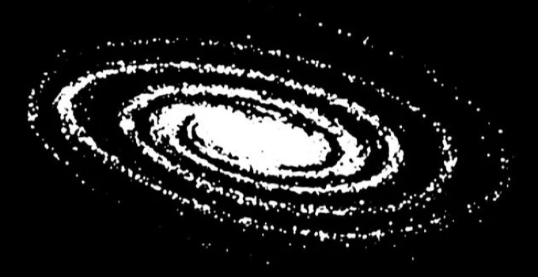

What if death is not the disappearance of everything we were, but the moment the extraordinary organization that made us someone begins to dissolve?
For an entire lifetime, our bodies sustain an invisible architecture of electrical activity, memories, sensations, and experiences.
We love. We fear. We imagine places we've never visited. We carry the voices of people who are no longer here. Sometimes a familiar scent brings back an entire moment we thought had disappeared.
An entire world lives within our awareness, yet none of it can be held in our hands.
Then, one day, the body can no longer sustain the relationships that made these experiences possible.
Its electrical gradients collapse. Its coordinated activity breaks down. Matter and energy continue through other physical processes.
But what becomes of everything that once participated in being alive?
Death is not a single ending. It is a transition in which one living organization dissolves while its physical constituents and consequences follow different paths.
And perhaps the deeper mystery begins with what we mean by ourselves.

Our bodies perform extraordinary functions without conscious direction. The heart beats. Cells regulate their internal conditions. Biological systems respond to threats and maintain the delicate balance necessary for life.
Yet functioning and experiencing are not quite the same thing.
We do not merely feel warmth. We recognize the comfort of someone we love. We do not simply hear a voice. We remember the person who gave it meaning.
The body sustains life, but awareness makes that life an experience of being someone.
And where does that awareness begin?
Imagine closing your eyes and seeing a place you've never visited.
You can picture its colors, move through its spaces, perhaps even feel strangely familiar with something you've never consciously encountered.
Yet if someone opened your skull, they wouldn't discover that landscape. No miniature recording of your childhood. No physical portrait of the people you've loved.
They would find living tissue.
Neuroscience tells us that memories involve distributed neural networks whose connections and activity are shaped by experience. When those networks reactivate, the brain can reconstruct aspects of what happened before.
The original moment is gone, but the system that experienced it has changed.
The past has not returned. It has changed the way the present is being experienced.
Now consider how much of that experience begins beyond our bodies.
We breathe the atmosphere. Drink water. Absorb sunlight. Encounter the world through sensation, movement, and touch.
Light becomes neural activity. A scent awakens a memory. A familiar touch changes our heartbeat.
Something that began outside you becomes part of an experience you call mine.
Where, precisely, does the world end and your experience begin?
The body is not a sealed container. It is a living boundary through which matter, energy, and information are continuously transformed.
But what if we've been looking at consciousness from only one direction?
What if awareness is not simply something we possess, but something we exist within?
What if our bodies provide a temporary, individual perspective through which a more fundamental reality becomes experienced?
A heartbeat. A memory. The tenderness of attachment. The vulnerability of loving something we know we can lose.
And what would become of those experiences if awareness no longer inhabited a living body?
We can recognize another person's suffering, but what does it mean to feel their pain? The tightening in our chest when someone we love is hurting. The instinct to reach for another person because we remember what it feels like to need someone ourselves.
Our emotions are not merely thoughts. They are shaped through the continuous relationship between our nervous system, bodily sensations, and lived experience.
Perhaps the body does not simply give awareness a form. Perhaps it helps give experience its meaning.
And if awareness could exist through another form, would love, empathy, and vulnerability still be experienced in the same way?
We know that the brain and body participate intimately in conscious experience. Yet the deeper nature of awareness remains unresolved.
Living cells demonstrate remarkable capacities for adaptation, communication, and collective behavior even without conventional nervous systems. Such findings expand our understanding of biological intelligence, although they do not establish consciousness beyond the brain.
Perhaps awareness emerges through these relationships. Or perhaps living organization gives individual expression to something more fundamental.
Either possibility invites us to reconsider what it means to experience existence.
We are not simply receiving the world.
We are being reorganized by our encounters with it.
But the encounter moves in both directions.
The world changes us through everything we receive, and through our responses, we change something in return. Every movement, every interaction, every expression of life becomes part of the physical history of our surroundings.
We are both interpreters of existence and participants in what it becomes.

And this brings us back to death.
A living body is not one process operating at one scale. It is a coordination of countless systems, each with different conditions for persistence.
When an organism dies, not every component necessarily follows the same timeline.
Some cells may remain viable temporarily. Under suitable conditions, living cells can even reorganize into new collective forms. Other tissues may retain recognizable structure long after cellular life has ended, particularly when their surroundings slow degradation.
The organism may end before every living component dies. Its cells may die before every structure they created disappears.
Perhaps an ending is not a single disappearance, but a transformation in which different parts of an existence follow different futures.
And what about the bioelectric activity that once helped organize those living relationships?
During life, cells maintain electrical differences across their membranes through energy-dependent processes. These gradients help regulate communication, development, and physiological activity.
When that maintenance ends, the gradients dissipate. The information carried by their precise electrical patterns is not guaranteed to survive, even though the associated energy is redistributed.
But a signal and its consequences are not the same thing.
A temporary electrical interaction can alter a material. An organism can change its surroundings. Some physical changes persist after the activity that produced them has ceased.

This leads to my central proposal: biological activity can leave consequential physical changes in the surrounding medium. I want to investigate whether some bioelectric histories influence future organization.
A changed surface. A retained electrical state. A chemical or structural condition that another living system may eventually encounter.
This is the possibility explored through Medium-Conditioned Organizational Recurrence (MCOR).
The medium would not need to preserve an entire organism. It might only need to retain a consequential physical change that a later system can detect and respond to.
Known forms of environmental inheritance already demonstrate parts of this relationship. Whether postmortem bioelectric activity contributes additional persistent states that influence future development remains an open hypothesis.
But consider the implication.
The past would not have to reproduce itself to participate in what comes next.
Perhaps even the familiar repetition of history reflects something about this relationship.
We inherit fragments of knowledge, reconstruct forgotten meanings, and sometimes rediscover what others understood long before us. Sometimes information survives through transmission; other times, familiar conditions lead us independently toward similar patterns.
The past does not always return as a copy. Sometimes its influence appears through what the present makes of it.
And nature presents another revealing contrast.
Living cells continually expend energy to maintain their organization. Preserved tissues may endure because environmental conditions slow their destruction. Surviving cells, under different conditions, may reorganize into new forms.
Different mechanisms, different scales, yet a recurring relationship between boundaries, energy, and the conditions that govern change.
Perhaps the deepest difference between life and death is not that matter stops changing, but that the relationships governing its change are transformed.

Suddenly, the question of death becomes more complicated.
We imagine ourselves as individuals with a beginning and an ending. Yet our bodies have never been entirely separate from the world that sustained them.
Every experience changed something within us. Every interaction had the potential to change something beyond us.
We were always participating in a world already shaped by what existed before.
If awareness is something more fundamental than biological organization, death raises another mystery: what happens when one particular way of experiencing that awareness comes to an end?
Science cannot presently establish that a soul or individual consciousness survives such a transition. The conservation of energy alone cannot answer that question.
But another form of continuity is already visible in the physical world.
What persists is not always the original form. Sometimes it is the conditions and possibilities that form helped create.
We inherit a world transformed by innumerable lives.
Through our bodies, that world becomes something we can sense, interpret, remember, and experience.
And through our existence, we participate in changing the conditions from which something else may emerge.
We do not simply pass through existence. We change the conditions through which existence continues to unfold.
We began by asking what survives an individual.
But perhaps the deeper question is what remains capable of becoming something else once the organization that made us individuals has ended.